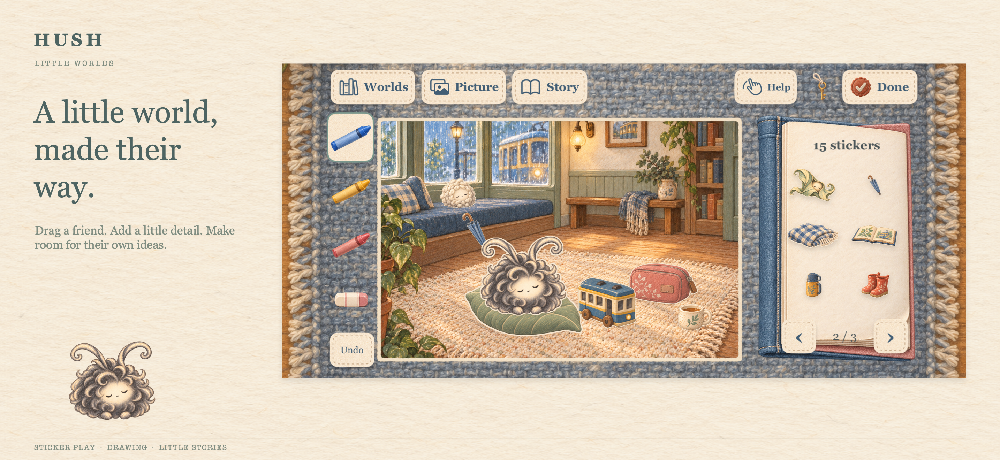
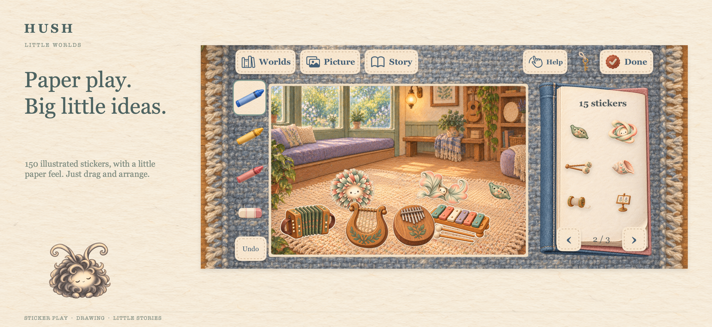
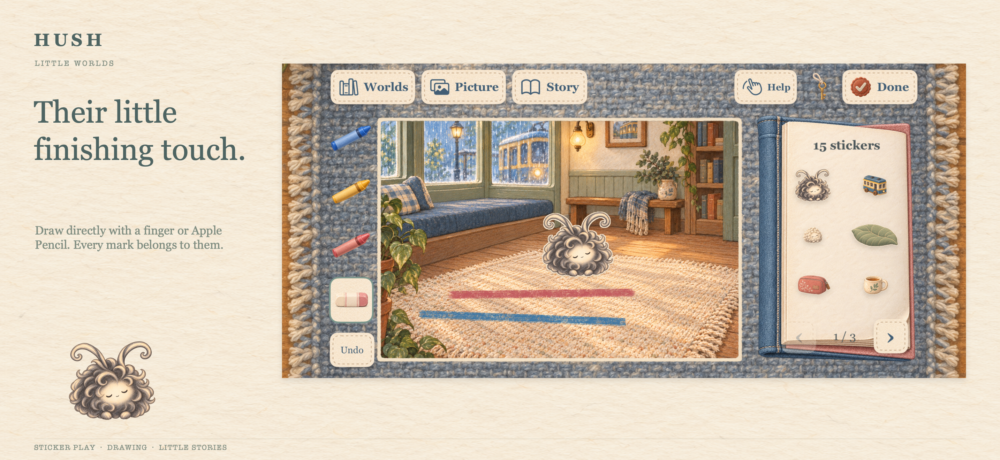
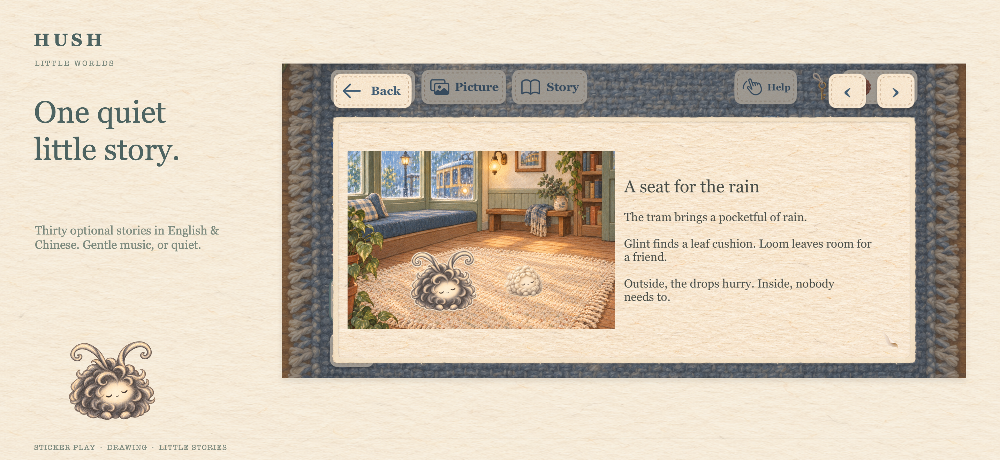
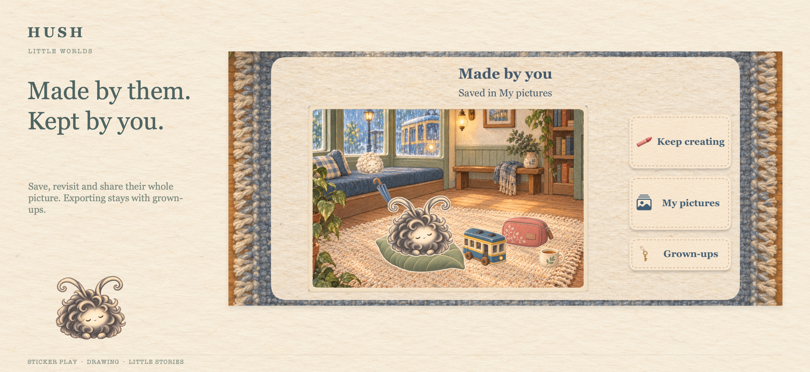
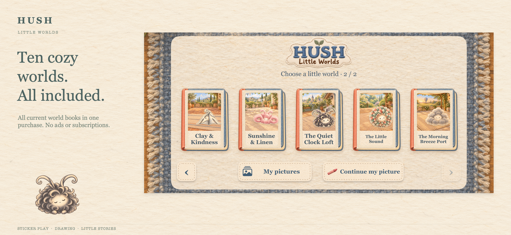

Review draft · 审阅草稿 · 尚未上架
HUSH: Little Worlds
A cozy illustrated paper playroom for children and their families. Drag illustrated stickers, add their own drawing, listen to an optional story, and keep the whole picture.
US$2.99 一次买断，包含当前十册、40 张画纸、150 件纸贴与 30 篇中英短故事。没有广告、订阅或应用内购买。英文界面，中文故事可选。
点图可查看完整原图。所有画面来自实际 App 的原生运行截图；此页用于审阅素材。
1. A little world, made their way.

Drag a friend. Add a little detail. Make room for their own ideas.
2. Paper play. Big little ideas.

150 illustrated stickers, with a little paper feel. Just drag and arrange.
3. Their little finishing touch.

Draw directly with a finger or Apple Pencil. Every mark belongs to them.
4. One quiet little story.

Thirty optional stories in English & Chinese. Gentle music, or quiet.
5. Made by them. Kept by you.

Save, revisit and share their whole picture. Exporting stays with grown-ups.
6. Ten cozy worlds. All included.

All current world books in one purchase. No ads or subscriptions.